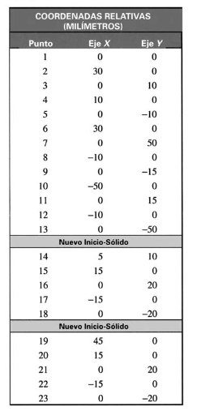
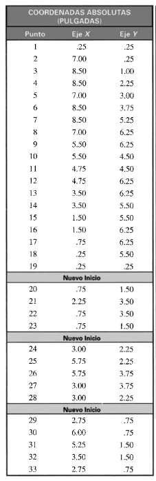
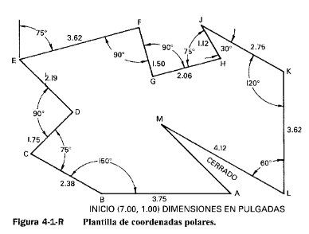
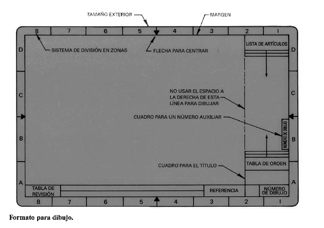

📚
Contenido
Accede a unidades, actividades, ejercicios y material del curso.
Diseña, modela y transforma ideas en soluciones mediante herramientas de diseño asistido por computadora.

Accede a unidades, actividades, ejercicios y material del curso.
Durante el curso trabajaremos con herramientas de diseño asistido por computadora.
Modelado tridimensional, diseño mecánico y desarrollo de piezas y ensambles.
Diseño CAD colaborativo y modelado tridimensional directamente desde la nube.
En esta unidad se construye geometría con precisión. Primero se define dónde se encuentra cada punto y después se selecciona la entidad adecuada para unirlos o generar formas.
Todo dibujo CAD bidimensional se localiza en el plano cartesiano mediante un par (X,Y). El origen general es (0,0); X aumenta hacia la derecha y Y hacia arriba. Las coordenadas permiten dibujar sin depender de la aproximación visual del cursor.
Los signos expresan dirección: +X derecha, −X izquierda, +Y arriba y −Y abajo.




Comprobación del ejercicio 4: distancia ≈ 25; ángulo ≈ 126.87°.
Una entidad es un objeto geométrico independiente almacenado en el dibujo. Elegir la entidad correcta facilita la edición, el acotado, la impresión y la creación posterior de regiones o sólidos.
| Entidad | Comando habitual | Datos principales | Aplicación |
|---|---|---|---|
| Línea | LINE / L | Punto inicial y final | Aristas y construcción |
| Polilínea | PLINE / PL | Puntos, ancho y arcos | Contornos continuos y cerrados |
| Círculo | CIRCLE / C | Centro-radio, diámetro, 2P, 3P o TTR | Agujeros, ejes y elementos circulares |
| Arco | ARC / A | Tres puntos o combinaciones centro-inicio-fin | Transiciones y perfiles curvos |
| Rectángulo | RECTANG / REC | Dos esquinas; chaflán, empalme o dimensiones | Placas, marcos y cajetines |
| Elipse | ELLIPSE / EL | Extremos de un eje y distancia al otro | Ranuras, proyecciones y perfiles |
| Polígono | POLYGON / POL | Lados, centro, inscrito/circunscrito o arista | Tuercas y geometría regular |
| Spline | SPLINE / SPL | Puntos de ajuste o vértices | Perfiles suaves de forma libre |
Sube una captura legible del plano, modelo, ensamble o ejercicio solicitado. El sistema registra la evidencia en Google Sheets y compara patrones visuales con las entregas anteriores para señalar posibles coincidencias al docente.
PROGRAMA DEL CURSO · 2026/02
Consulta las unidades, actividades y fechas programadas. La activación dinámica por el docente se incorporará en la siguiente etapa.
80% evaluación
20% trabajo en clase
50% evaluación
50% trabajo en clase
80% trabajo en clase
20% trabajo final
Presentación del curso, acuerdos, escala de evaluación e investigación de normas de dibujo.
Participa desde tu teléfono en las cinco preguntas de reflexión. Esta actividad se utiliza para comentar los resultados en clase y no genera calificación.
Participar en Mentimeter →Responde 10 preguntas. La actividad tiene una sola oportunidad, ofrece retroalimentación inmediata.
No cambies de pestaña ni cierres el portal mientras contestas: si sales, se registrará calificación 0.
Exploración del ambiente CAD, software disponible y plantillas de dibujo.
Lista de comandos básicos y atajos; práctica de identificación de herramientas.
Definiciones y ejercicios de coordenadas; formatos A0–A4 y elaboración de un dibujo técnico.
Diseño de una pieza mecánica aplicando normas, formatos, coordenadas y entidades básicas.
Ejercicios de movimiento, copia y cambio de escala en software CAD.
Dibujo de una pieza aplicando rotación, perfiles y chaflanes.
Ejercicios de corte y extensión de entidades.
Duración: 2 horas.
Duración: 2 horas.
Dibujo de objetos simples utilizando perspectivas axonométricas.
Investigación y corrección de errores comunes de acotación.
Dibujo técnico con dimensionamiento y acotaciones conforme a normas.
Librerías de SolidWorks; ajustes con juego, interferencia y transición; tablas ISO y ejercicios H7/g6.
Duración: 2 horas.
Duración: 2 horas.
Tolerancias geométricas y dimensionales; reconocimiento de símbolos de texturas.
Práctica integradora con tolerancias, símbolos de acabado y planos CAD.
Creación y modificación de sólidos tridimensionales en CAD.
Modelos de ensamble y conjunto, vistas, acotaciones y edición de sólidos.
Formatos, márgenes, escalas, cajetines y elaboración de un plano ejecutivo completo.
Duración: 2 horas.
Duración: 2 horas.
Las actividades con captura, fechas límite, validación docente y desbloqueo progresivo se conectarán posteriormente al panel docente.
Conoce tu nivel inicial en Dibujo Asistido por Computadora.
Solo tienes una oportunidad. Si sales de esta página mientras respondes, se registrará calificación 0.